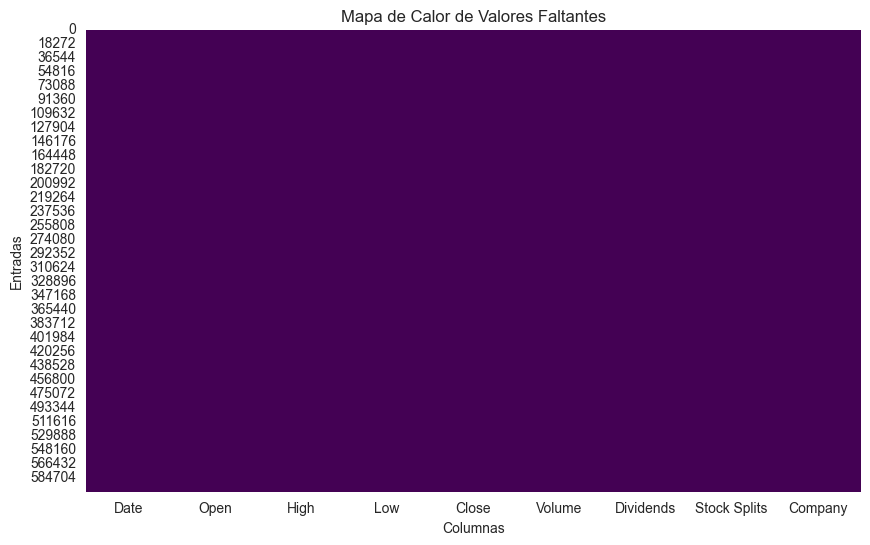
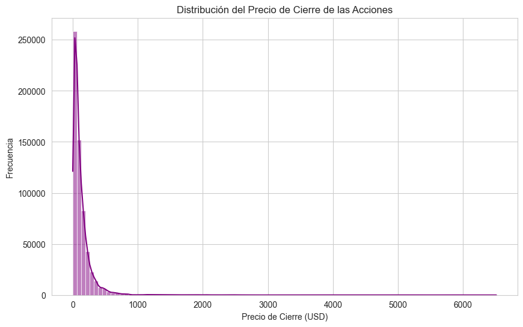
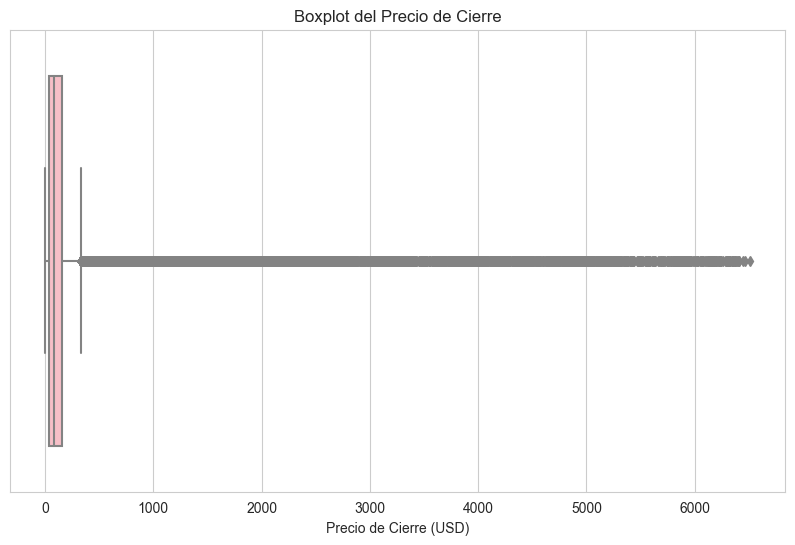
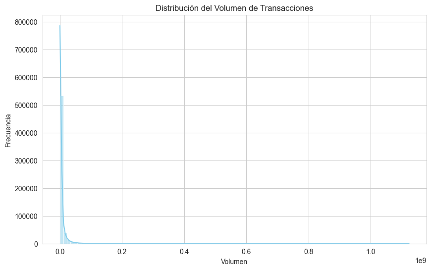
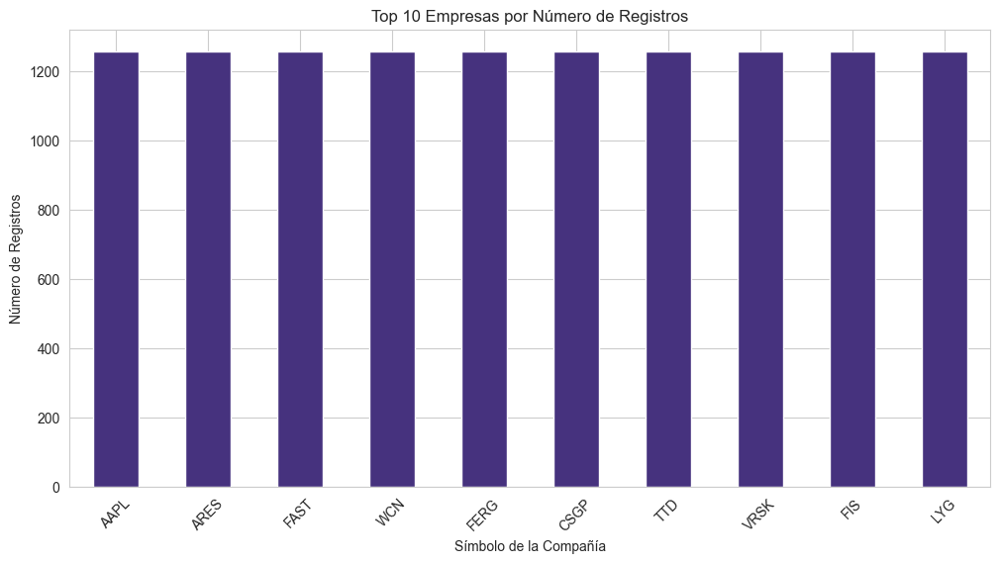
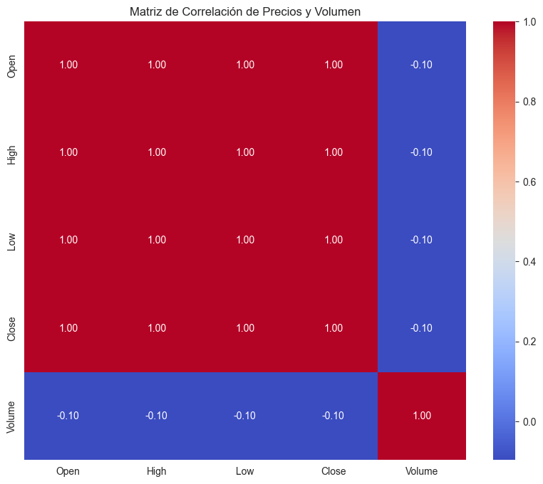
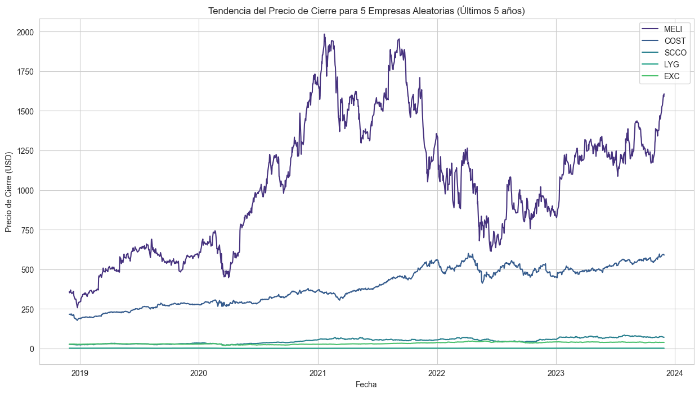

Desarrollo del análisis exploratorio#
Información del Dataset#
Título: Precios de las acciones de las 500 empresas más grandes por capitalización de mercado (últimos 5 años)
Fuente: Datos históricos extraídos de Yahoo Finance.
Resumen: El conjunto de datos comprende registros diarios de métricas de rendimiento de acciones para las 500 principales empresas a lo largo de un período de cinco años.
Variables de Dataset:
Fecha: Fecha del registro bursátil.
Abrir: Precio de apertura de la acción.
Alto: Precio más alto del día.
Bajo: Precio más bajo del día.
Cerrar: Precio de cierre de la acción.
Volumen: Volumen de acciones negociadas.
Dividendos: Pagos de dividendos (si aplica).
Divisiones de acciones: Información sobre divisiones de acciones (si aplica).
Compañía: Símbolo de cotización de la empresa.
Librerías y conjunto de datos#
En esta sección se realizará la importación de las librerías necesarias y la carga del conjunto de datos que se utilizará en el análisis exploratorio.
# Importar librerías
import pandas as pd
import numpy as np
import matplotlib.pyplot as plt
import seaborn as sns
# Configuración de visualizaciones
%matplotlib inline
sns.set_style('whitegrid')
sns.set_palette('viridis')
# Cargar el dataset desde la ruta especificada
# La ruta es 'datos/stock_details_5_years.csv'
try:
df = pd.read_csv('C:\\Users\\johan\\OneDrive - Universidad del Norte\\Escritorio\\MachineLearning\\1er_tarea\\datos\\stock_details_5_years.csv')
print("Dataset cargado correctamente.")
except FileNotFoundError:
print("Error: Asegúrate de que el archivo 'stock_details_5_years.csv' esté en la carpeta 'datos'.")
Dataset cargado correctamente.
2. Descripción y Estructura del Dataset#
En esta sección, obtendremos una visión de alto nivel del dataset para entender su forma, tipos de datos y la presencia de valores. Describiremos cada una de las variables del conjunto de datos.
# Mostrar las primeras 5 filas para una vista previa
print("--- Primeras 5 filas del DataFrame ---")
display(df.head())
# Obtener información general del DataFrame (tipos de datos, conteo de no-nulos)
print("\n--- Información general del DataFrame ---")
df.info()
# Estadísticas descriptivas para las variables numéricas
print("\n--- Estadísticas descriptivas de las variables numéricas ---")
display(df.describe())
--- Primeras 5 filas del DataFrame ---
| Date | Open | High | Low | Close | Volume | Dividends | Stock Splits | Company | |
|---|---|---|---|---|---|---|---|---|---|
| 0 | 2018-11-29 00:00:00-05:00 | 43.829761 | 43.863354 | 42.639594 | 43.083508 | 167080000 | 0.00 | 0.0 | AAPL |
| 1 | 2018-11-29 00:00:00-05:00 | 104.769074 | 105.519257 | 103.534595 | 104.636131 | 28123200 | 0.00 | 0.0 | MSFT |
| 2 | 2018-11-29 00:00:00-05:00 | 54.176498 | 55.007500 | 54.099998 | 54.729000 | 31004000 | 0.00 | 0.0 | GOOGL |
| 3 | 2018-11-29 00:00:00-05:00 | 83.749496 | 84.499496 | 82.616501 | 83.678497 | 132264000 | 0.00 | 0.0 | AMZN |
| 4 | 2018-11-29 00:00:00-05:00 | 39.692784 | 40.064904 | 38.735195 | 39.037853 | 54917200 | 0.04 | 0.0 | NVDA |
--- Información general del DataFrame ---
<class 'pandas.core.frame.DataFrame'>
RangeIndex: 602962 entries, 0 to 602961
Data columns (total 9 columns):
# Column Non-Null Count Dtype
--- ------ -------------- -----
0 Date 602962 non-null object
1 Open 602962 non-null float64
2 High 602962 non-null float64
3 Low 602962 non-null float64
4 Close 602962 non-null float64
5 Volume 602962 non-null int64
6 Dividends 602962 non-null float64
7 Stock Splits 602962 non-null float64
8 Company 602962 non-null object
dtypes: float64(6), int64(1), object(2)
memory usage: 41.4+ MB
--- Estadísticas descriptivas de las variables numéricas ---
| Open | High | Low | Close | Volume | Dividends | Stock Splits | |
|---|---|---|---|---|---|---|---|
| count | 602962.000000 | 602962.000000 | 602962.000000 | 602962.000000 | 6.029620e+05 | 602962.00000 | 602962.000000 |
| mean | 140.074711 | 141.853492 | 138.276316 | 140.095204 | 5.895601e+06 | 0.00731 | 0.000344 |
| std | 275.401725 | 279.003191 | 271.895276 | 275.477969 | 1.381596e+07 | 0.12057 | 0.050607 |
| min | 1.052425 | 1.061195 | 1.026114 | 1.034884 | 0.000000e+00 | 0.00000 | 0.000000 |
| 25% | 39.566159 | 40.056222 | 39.058151 | 39.563746 | 1.031500e+06 | 0.00000 | 0.000000 |
| 50% | 79.177964 | 80.125563 | 78.193820 | 79.177906 | 2.228700e+06 | 0.00000 | 0.000000 |
| 75% | 157.837190 | 159.746317 | 155.841609 | 157.847153 | 5.277400e+06 | 0.00000 | 0.000000 |
| max | 6490.259766 | 6525.000000 | 6405.000000 | 6509.350098 | 1.123003e+09 | 35.00000 | 20.000000 |
3. Análisis de Valores Faltantes#
Este es un punto crucial del EDA. Aquí cuantificaremos la extensión de los valores nulos para entender la calidad de los datos, sin realizar ninguna modificación.
# Calcular el conteo y porcentaje de valores nulos por columna
valores_nulos = df.isnull().sum()
porcentaje_nulos = (valores_nulos / len(df)) * 100
# Crear un DataFrame para visualizar los nulos de manera clara
df_nulos = pd.DataFrame({'Valores Nulos': valores_nulos, 'Porcentaje': porcentaje_nulos})
df_nulos = df_nulos[df_nulos['Valores Nulos'] > 0].sort_values(by='Valores Nulos', ascending=False)
print("--- Conteo y Porcentaje de Valores Faltantes por Columna ---")
display(df_nulos)
# Visualizar la presencia de valores faltantes usando un mapa de calor
plt.figure(figsize=(10, 6))
sns.heatmap(df.isnull(), cbar=False, cmap='viridis')
plt.title('Mapa de Calor de Valores Faltantes')
plt.xlabel('Columnas')
plt.ylabel('Entradas')
plt.show()
--- Conteo y Porcentaje de Valores Faltantes por Columna ---
| Valores Nulos | Porcentaje |
|---|

4. Análisis de la Distribución de Variables Clave#
En esta sección, nos centraremos en las variables numéricas más importantes para entender cómo se distribuyen sus valores.
# Histograma para el precio de cierre (`Close`)
plt.figure(figsize=(10, 6))
sns.histplot(df['Close'], bins=100, kde=True, color='purple')
plt.title('Distribución del Precio de Cierre de las Acciones')
plt.xlabel('Precio de Cierre (USD)')
plt.ylabel('Frecuencia')
plt.show()
# Boxplot para identificar valores atípicos en el precio de cierre
plt.figure(figsize=(10, 6))
sns.boxplot(x=df['Close'], color='lightpink')
plt.title('Boxplot del Precio de Cierre')
plt.xlabel('Precio de Cierre (USD)')
plt.show()
# Histograma para el volumen (`Volume`)
plt.figure(figsize=(10, 6))
sns.histplot(df['Volume'], bins=100, kde=True, color='skyblue')
plt.title('Distribución del Volumen de Transacciones')
plt.xlabel('Volumen')
plt.ylabel('Frecuencia')
plt.show()
# Análisis de la variable categórica `Company`
print("\n--- Top 10 empresas con más registros ---")
display(df['Company'].value_counts().head(10))
plt.figure(figsize=(12, 6))
df['Company'].value_counts().head(10).plot(kind='bar')
plt.title('Top 10 Empresas por Número de Registros')
plt.xlabel('Símbolo de la Compañía')
plt.ylabel('Número de Registros')
plt.xticks(rotation=45)
plt.show()
C:\Users\johan\miniconda3\envs\ml_venv\lib\site-packages\seaborn\_oldcore.py:1498: FutureWarning: is_categorical_dtype is deprecated and will be removed in a future version. Use isinstance(dtype, CategoricalDtype) instead
if pd.api.types.is_categorical_dtype(vector):
C:\Users\johan\miniconda3\envs\ml_venv\lib\site-packages\seaborn\_oldcore.py:1119: FutureWarning: use_inf_as_na option is deprecated and will be removed in a future version. Convert inf values to NaN before operating instead.
with pd.option_context('mode.use_inf_as_na', True):

C:\Users\johan\miniconda3\envs\ml_venv\lib\site-packages\seaborn\_oldcore.py:1498: FutureWarning: is_categorical_dtype is deprecated and will be removed in a future version. Use isinstance(dtype, CategoricalDtype) instead
if pd.api.types.is_categorical_dtype(vector):

C:\Users\johan\miniconda3\envs\ml_venv\lib\site-packages\seaborn\_oldcore.py:1498: FutureWarning: is_categorical_dtype is deprecated and will be removed in a future version. Use isinstance(dtype, CategoricalDtype) instead
if pd.api.types.is_categorical_dtype(vector):
C:\Users\johan\miniconda3\envs\ml_venv\lib\site-packages\seaborn\_oldcore.py:1119: FutureWarning: use_inf_as_na option is deprecated and will be removed in a future version. Convert inf values to NaN before operating instead.
with pd.option_context('mode.use_inf_as_na', True):

--- Top 10 empresas con más registros ---
Company
AAPL 1258
ARES 1258
FAST 1258
WCN 1258
FERG 1258
CSGP 1258
TTD 1258
VRSK 1258
FIS 1258
LYG 1258
Name: count, dtype: int64

5. Análisis Bivariado y de Series de Tiempo#
Aquí investigaremos la relación entre variables y su evolución en el tiempo.
# Matriz de correlación de variables numéricas
# Se excluyen las variables con muchos nulos para un análisis más limpio
variables_numericas = ['Open', 'High', 'Low', 'Close', 'Volume']
correlacion = df[variables_numericas].corr()
plt.figure(figsize=(10, 8))
sns.heatmap(correlacion, annot=True, cmap='coolwarm', fmt=".2f")
plt.title('Matriz de Correlación de Precios y Volumen')
plt.show()
# Para el análisis de series de tiempo, primero convertimos la columna `Date`
df['Date'] = pd.to_datetime(df['Date'])
# Y ordenamos los datos para que el gráfico de series de tiempo sea correcto
df = df.sort_values(by=['Company', 'Date'])
# Seleccionamos 5 empresas aleatorias para visualizar su desempeño
empresas_aleatorias = np.random.choice(df['Company'].unique(), 5, replace=False)
plt.figure(figsize=(15, 8))
for company in empresas_aleatorias:
# Filtramos los datos por cada empresa seleccionada
df_empresa = df[df['Company'] == company]
plt.plot(df_empresa['Date'], df_empresa['Close'], label=company)
plt.title('Tendencia del Precio de Cierre para 5 Empresas Aleatorias (Últimos 5 años)')
plt.xlabel('Fecha')
plt.ylabel('Precio de Cierre (USD)')
plt.legend()
plt.grid(True)
plt.show()

C:\Users\johan\AppData\Local\Temp\ipykernel_35828\3217971710.py:12: FutureWarning: In a future version of pandas, parsing datetimes with mixed time zones will raise a warning unless `utc=True`. Please specify `utc=True` to opt in to the new behaviour and silence this warning. To create a `Series` with mixed offsets and `object` dtype, please use `apply` and `datetime.datetime.strptime`
df['Date'] = pd.to_datetime(df['Date'])

6. Conclusiones del EDA#
Calidad de los datos: Se identificaron valores faltantes en las columnas
DividendsyStock Splits, lo cual es una característica inherente a los datos de este tipo.Estructura de los datos: El dataset está bien estructurado. Las variables de precio (
Open,High,Low,Close) yVolumeestán listas para el análisis. La variableDatees de tipoobjecty se ha convertido adatetimepara el análisis de series de tiempo.Distribución de variables: Las variables de precio y volumen muestran distribuciones fuertemente sesgadas a la derecha, con un alto número de valores atípicos. Esto indica que la mayoría de los registros corresponden a precios y volúmenes bajos, con un subconjunto de valores extremadamente altos.
Correlación y tendencias: La matriz de correlación muestra una alta correlación entre las variables de precio, lo cual es esperado. El análisis de series de tiempo revela la volatilidad y las tendencias a largo plazo en los precios de las acciones de diferentes empresas.